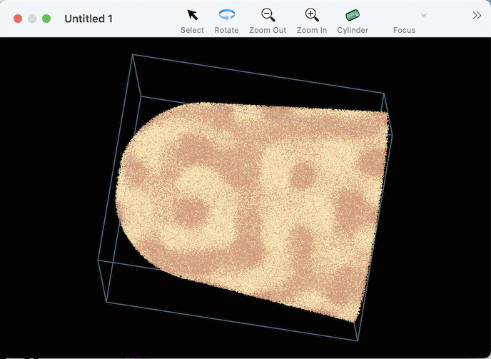

The FeCrSpinodal sample file provided with this repo is the output of a Spinodal decomposition simulation. It only requires 2 mass ranges. Here's a script that defines them:
tell application "Sinterapt"
tell document 1
make new mass range with properties {lower bound:49, upper bound:55, atom list:{"Cr"}, name:"Cr+"}
make new mass range with properties {lower bound:57, upper bound:65, atom list:{"Fe"}, name:"Fe+"}
end tell
end tellAfter running this script, you'll notice a few things happend.
The inspector window now tells us that there are two Mass Ranges and two Atomtypes in the document.
The graphics window now displays different colors for the different atoms. It should look something like:

Note that the Sinterapt graphics window displays atoms, not ions. This is a distinction without a difference in the case that each ion corresponds to a single atom, but in the case where some ions are multiatomic, the graphics window displays the atoms separately.
The "result" of the script shown in the bottom of the Script Editor window will be something like
mass range id 28 of document id 15 of application "Sinterapt"the script consisted of two lines, each of which was a different command. The result shown only shows the result from the last command. Because the command was "make new mass range ...", the result of that command is a reference to the mass range that was created.
You may notice, that even though there was no explicit command to make an atomtype, two atomtypes were created. This is because each mass range implicitly contained a reference to an atomtype in its "atom list" property. When a corresponding atom type cannot be found, it is created automatically
A script for defining mass ranges can be made a bit less awkward by condensing the important information into a list, and then iterating through. Here's an example:
set massRangeDataList to {¬
{13.454, 13.778, "Al"}, ¬
{26.897, 27.561, "Al"}, ¬
{27.847, 28.796, "Fe"}, ¬
{53.802, 54.286, "Fe"}, ¬
{55.761, 57.501, "Fe"}, ¬
{29.382, 29.884, "Co"}, ¬
{58.822, 59.593, "Co"}, ¬
{28.904, 29.243, "Ni"}, ¬
{29.93, 30.038, "Ni"}, ¬
{30.432, 30.548, "Ni"}, ¬
{30.918, 31.103, "Ni"}, ¬
{31.914, 32.076, "Ni"}, ¬
{57.787, 58.646, "Ni"}, ¬
{59.813, 62.587, "Ni"}, ¬
{63.82, 64.238, "Ni"}, ¬
{25.932, 26.067, "Cr"}, ¬
{51.887, 52.086, "Cr"}}
repeat with mrd in massRangeDataList
set ll to item 1 of mrd
set ul to item 2 of mrd
set atomname to item 3 of mrd
tell application "Sinterapt"
tell document 1
make new mass range with properties {lower bound:ll, upper bound:ul, atom list:{atomname}}
end tell
end tell
end repeatIn this script, note the use of the ¬ character, which is used in AppleScript to continue the line around a line break, which makes working with lists a little easier.
Version 25.11.2 adds support for defining mass ranges by importing a .RRNG file. After loading reconstructed data, select the "Apply RRNG…" menu item from the edit menu.
Note, however, there is a conflict between the object model implied by the structure of a RRNG file and the object model of Sinterapt. In a .RRNG file, each range is assigned a Color. However, in Sinterapt, mass ranges do not have a color of their own -- instead, each atomtype is assigned a color.
This leads to a few different kinds of conflicts:
In the case that two ranges map to the same atomtype, but each range specifies a different color, it is not obvious which color should be used for the atomtype.
In the case that a range maps to two or more atoms, it is not obvious which atom should have a color specified using that range's color. if at all.
In the case that a multiple range map multiple atoms, and specify different colors, there is no hope for any consistency in using the color information.
As of version 25.11.2, the color information is not used at all. A future version will selectively apply color information for single-atom ions.